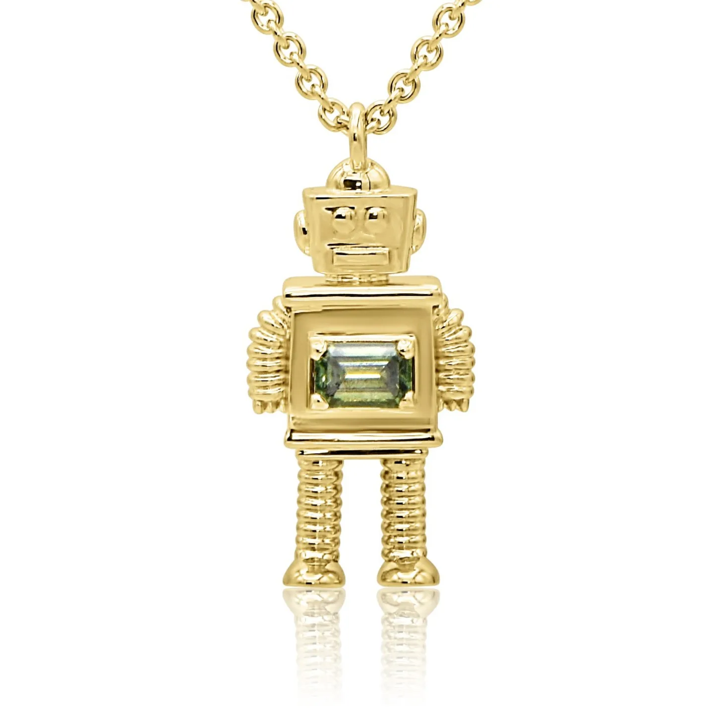

Meet the Goldbot
Een robot in geel goud, met een groene diamant als hart.
Klein genoeg om elke dag te dragen, en met meer persoonlijkheid dan de meeste hangers.
A little mechanical. A little human. A brilliant heart.
Zijn broertje in wit goud, met een ovale diamant